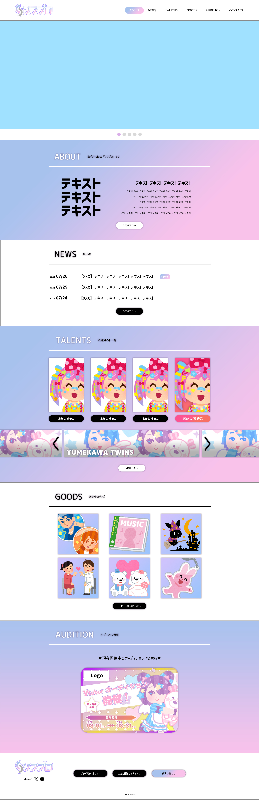

▼DATA
| ページリンク | Vtuber事務所ソフプロ |
|---|---|
| 制作時期 | 2024年8月 |
| 制作時間 | 40時間 |
| デザインカンプ | 6時間 |
| 各バナー | 各1時間 |
| javascript | 10時間(修正 +6時間) |
| 目的 | 所属しているタレントの宣伝 開催しているイベント、グッズ販売の宣伝 |
|---|---|
| ペルソナ | 10代～20代 女性 vtuberの配信や動画、活動を見るのが好きな方 vtuberに憧れを持っている方 |
| 最終的なアクション | タレント全体の知名度の向上 オーディションへの応募者の増加 |
| デザインイメージ | キラキラかわいい、夢を感じるデザインと配色 |
| イメージカラー | #ffb2ec #abc6f3 #e0cfe6 |
▼COMMENT
▼デザインカンプ

訓練校で基礎の授業が終わり、各々で作品作りをする時間になった際、はじめて制作したサイトです。
まずは自分がすきなものをテーマに作ろうと考え、vtuber事務所のサイトに決めました。当初は、自分が描いたイラストをすべてこのサイトに詰め込んでポートフォリオも兼ねたものにしようと思っていました。素材は一部いらすとや様からお借りしました。
検索上位の大手事務所の多くがページ上部の目立つ部分にスライダー形式で複数の宣伝を行っていました。自分も真似をしたかったのですが、cssだけでは自分の表現したい動きができず、とはいってもjavascriptの勉強もはじめたばかりだったので……ひとまずは全体の完成を優先して「こんなイメージで」の配置のみとなりました。
特に気にしながら作ったのは、レスポンシブデザインです。配信や動画はスマホで手軽に見るユーザーが多いと思ったので、スマホで見てもパソコンで見てもデザインが崩れないようにしました。